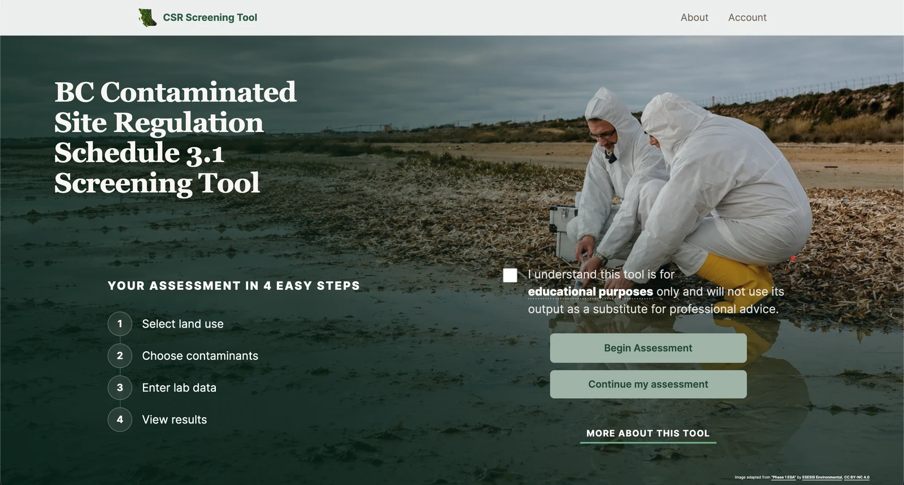
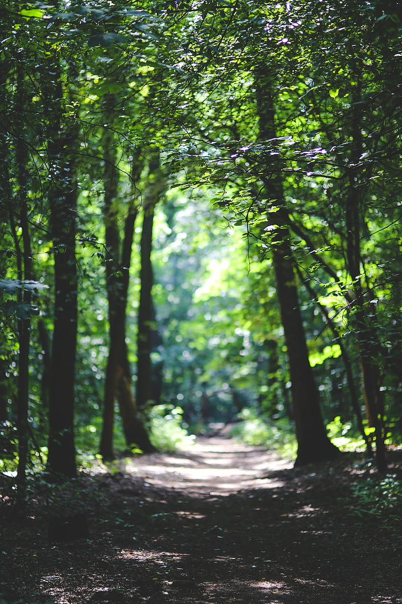
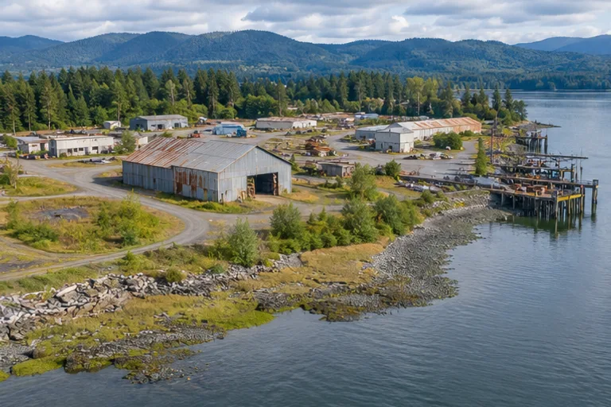
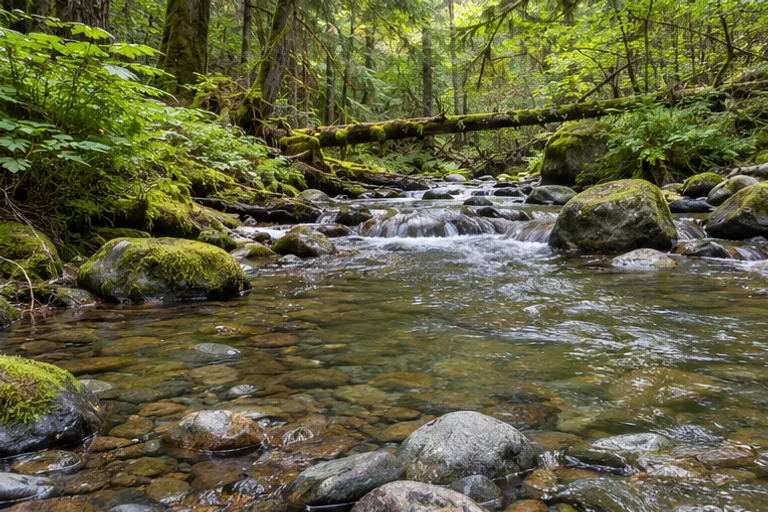

BC CSR Tool
A screening tool that compares soil and groundwater lab results against BC CSR Schedule 3.1 thresholds.
Explore the toolGeoffrey Hong Kei Lee
I turn field observations and environmental data into tools for clearer decisions.
Vancouver, BC

My work connects environmental assessment, field monitoring, spatial analysis, and development. I’m interested in making field data easier to interpret and use.
Simon Fraser University · Resource and Environmental Management

A screening tool that compares soil and groundwater lab results against BC CSR Schedule 3.1 thresholds.
Explore the tool
Illustrative image
Reconstructed the history of a brownfield site, mapped areas of potential environmental concern, and developed a conceptual site model.

Illustrative image
Used 40 years of Pacific salmon data to model population responses across dam and habitat scenarios.
Earls Kitchen + Bar · Part-time
Vancouver, BC
Stanley Park Ecology
Monitored beaver activity at Beaver Lake and Lost Lagoon and helped maintain bog habitat.
BC CSR Tool · Self-employed
Built a tool to compare soil and groundwater lab results against BC CSR Schedule 3.1 thresholds.
Stanley Park Ecology
Surveyed and removed invasive plants and monitored restoration sites in Stanley Park.
Engaging Minds Consulting Ltd. · Seasonal
Recorded water restriction compliance with ArcGIS Survey123 and helped map 322 routes across 12 municipalities.
E-commerce · Self-employed
Ran an independent business and built Excel dashboards to track inventory and sales.
HKU Laboratory for Space Research · Internship
Reviewed research to inform experimental design and kept project documentation organized.
Simon Fraser University
Resource and Environmental Management